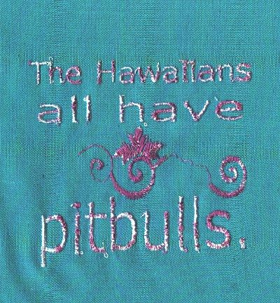

|  |  |  |  |  |
 |
Conversation Space words transplanted from discussions to dinner napkins cloth, original phrases, thread 2009 a practice launched into the lives of every day people & hopefully on sale soon at the Kunstsuper |
|

With each discussion we overlap our lives.
We open up conversation spaces where interpretations intermingle and experience is explained. I am addicted to channel surfing other people's stories because it's eye-opening and entertaining in a way that no reality TV show ever could be. I've been grabbing descriptions from this landscape and sending them back to the source via postcards. Now I am curious to see what happens when some of these fantastic fragments, these touchpoints in words, are transplanted to that fertile breeding ground for conversation, the dinner table. I still use the postcards, but now, when the vignettes pop out of conversation, I've also started giving them back to the speaker embroidered on a dinner napkin. For example: The Hawaiians all have pitbulls. The speaker of these words gets a set of four. Each of the other three dinner napkins are embroidered with a sentence taken from three other people in three completely different conversations. The first set launched into the world of table talk comprised all food-related quotes:
|